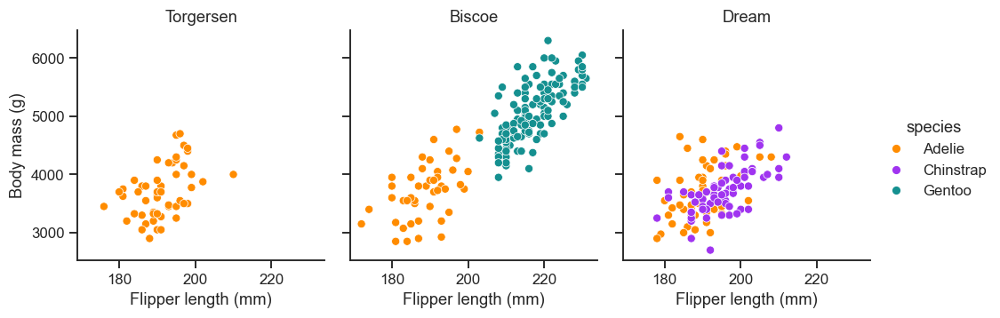
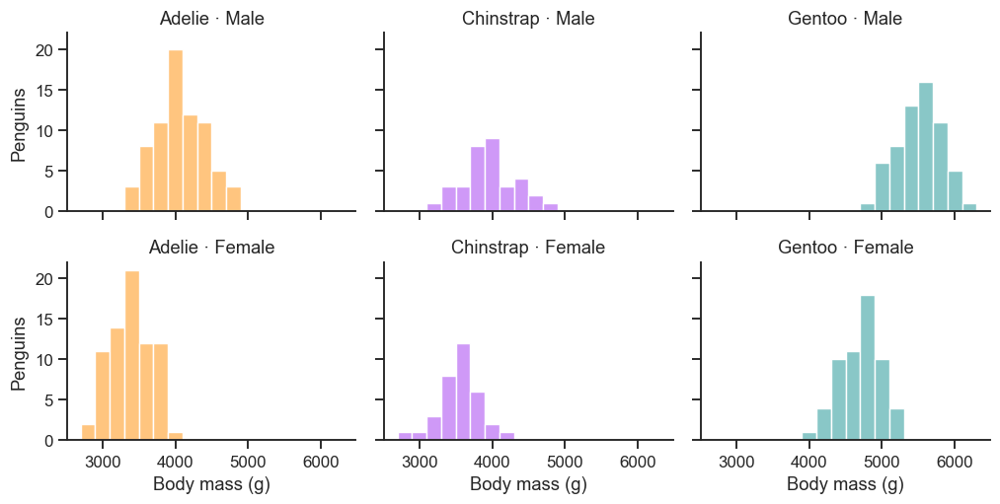
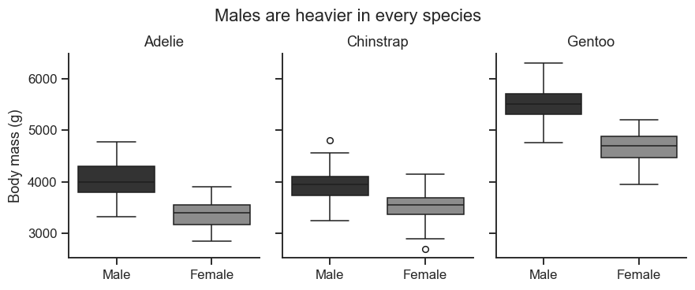
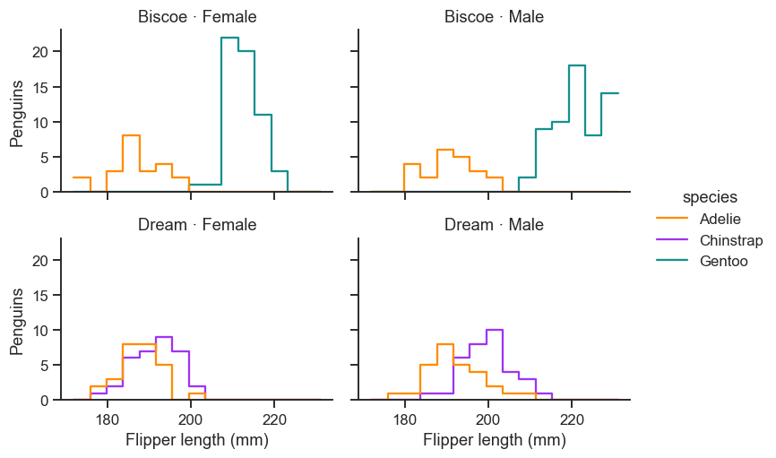
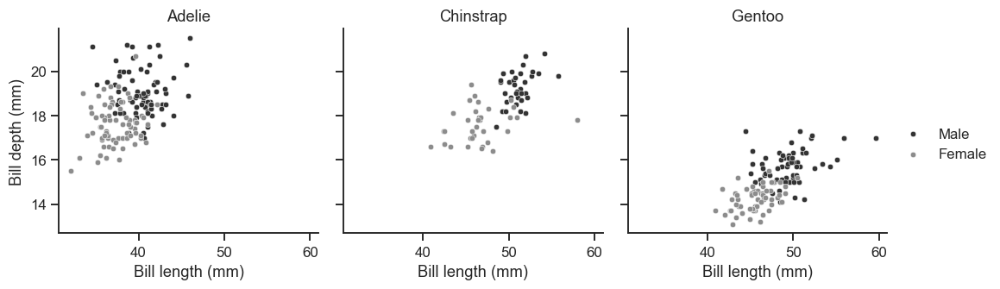
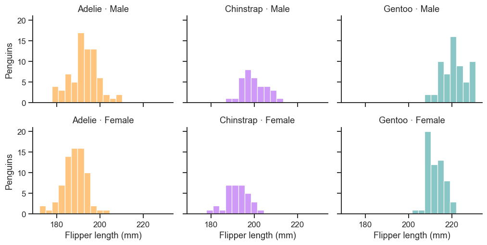
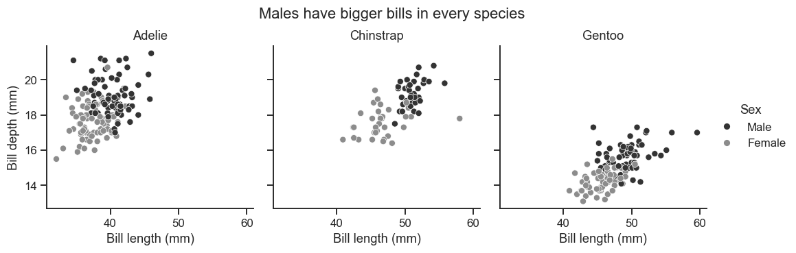

Lesson 5 - Small multiples with figure-level functions
When one chart gets crowded, don't cram in more colors. Split it into a grid of small charts that share the same axes. Seaborn's figure-level functions do this in one argument.
By the end of this lesson you can:
- tell axes-level functions from figure-level ones, and pick the right one
- split any chart into panels with
col=,row=andcol_wrap= - size and label a grid (
height,aspect,set_axis_labels,set_titles) - explain why shared axes are the default and when to keep them
import pandas as pd
import matplotlib.pyplot as plt
import seaborn as sns
sns.set_theme(style="ticks")
penguins = sns.load_dataset("penguins")
PENGUIN_COLORS = {"Adelie": "#FF8C00", "Chinstrap": "#A034F0", "Gentoo": "#159090"}
SEX_COLORS = {"Female": "#8c8c8c", "Male": "#333333"}
Two kinds of seaborn function
| Family | Axes-level (draws on one ax) |
Figure-level (makes a whole grid) |
|---|---|---|
| Relationships | scatterplot, lineplot |
relplot(kind="scatter" / "line") |
| Distributions | histplot, kdeplot, ecdfplot |
displot(kind="hist" / "kde" / "ecdf") |
| Categories | boxplot, barplot, stripplot, … |
catplot(kind="box" / "bar" / "strip" / ...) |
| Regression | regplot |
lmplot |
Axes-level functions take ax= and return an Axes. Use them when you build the layout with matplotlib (Lessons 6 and 7). Figure-level functions create their own figure, accept col= and row=, and return a FacetGrid. You size them with height= (inches per panel) and aspect= (width ÷ height), not figsize.
One panel per island
g = sns.relplot(data=penguins, x="flipper_length_mm", y="body_mass_g",
hue="species", palette=PENGUIN_COLORS,
col="island", col_order=["Biscoe", "Dream", "Torgersen"], # busiest first
height=3.4, aspect=0.9)
g.set_axis_labels("Flipper length (mm)", "Body mass (g)")
g.set_titles("{col_name}")
g.legend.set_title("Species")

One argument, col="island", gave three aligned panels. col_order= then puts them in a deliberate order, busiest island first, as in Lesson 3. Leave it out and the panels come in the order the islands first appear in the data (Torgersen, Biscoe, Dream), which means nothing to a reader. set_titles("{col_name}") swaps the default “island = Biscoe” titles for just the name, and g.legend.set_title(...) does for the grid’s legend what ax.get_legend().set_title(...) does for a single chart. Because the axes are shared, you can compare positions across panels directly. The Biscoe giants are Gentoos, and Torgersen is all Adelie.
Rows and columns
g = sns.displot(data=penguins, x="body_mass_g", col="species", row="sex",
hue="species", palette=PENGUIN_COLORS, legend=False,
binwidth=200, height=2.4, aspect=1.3)
g.set_axis_labels("Body mass (g)", "Penguins")
g.set_titles("{col_name} · {row_name}")

Each row is a sex and each column a species, giving six histograms on identical scales. Reading down a column compares females with males. Reading across compares species. Penguins with missing sex simply don’t appear.
Categorical grids with catplot
g = sns.catplot(data=penguins, x="sex", y="body_mass_g", col="species",
kind="box", hue="sex", palette=SEX_COLORS,
legend=False, height=3.4, aspect=0.8)
g.set_axis_labels("", "Body mass (g)")
g.set_titles("{col_name}")
g.figure.suptitle("Males are heavier in every species", y=1.04)

g.figure is the underlying matplotlib Figure, so suptitle adds a title over the whole grid. y=1.04 nudges it up, clear of the panel titles. The x-axis already names each sex, so legend=False drops a legend that would only repeat it.
Small multiples beat a crowded chart
Edward Tufte and Stephen Few both champion small multiples: the same chart repeated for each subset, on the same scales. The eye learns the design once, then spends its effort on the differences. If a single chart needs more than about four colors, or its lines tangle, facet it.
Shared axes: keep them (usually)
Figure-level functions share x and y across panels by default. That’s what makes panel-to-panel comparison honest. Unsharing (facet_kws={"sharey": False}) lets each panel zoom in on its own range, but then equal heights no longer mean equal values. Only do it when the panels are not meant to be compared, and say so.
Wrapping a long row
With many panels, col_wrap= wraps them into rows:
subset = penguins.dropna(subset=["sex"]).assign(
group=lambda d: d["island"] + " · " + d["sex"])
subset = subset[subset["island"].isin(["Biscoe", "Dream"])]
g = sns.displot(data=subset, x="flipper_length_mm", col="group", col_wrap=2,
hue="species", palette=PENGUIN_COLORS, element="step",
fill=False, binwidth=4, height=2.4, aspect=1.4)
g.set_axis_labels("Flipper length (mm)", "Penguins")
g.set_titles("{col_name}")
g.legend.set_title("Species")

Custom panels with FacetGrid
Under the hood, every figure-level function builds a FacetGrid. You can build one directly and map any plotting function onto it:
g = sns.FacetGrid(penguins, col="species", hue="sex", palette=SEX_COLORS, height=3.2)
g.map_dataframe(sns.scatterplot, x="bill_length_mm", y="bill_depth_mm", s=18)
g.add_legend(title="")
g.set_axis_labels("Bill length (mm)", "Bill depth (mm)")
g.set_titles("{col_name}")

Your turn
Show a solution
g = sns.displot(data=penguins, x="flipper_length_mm", col="species", row="sex",
hue="species", palette=PENGUIN_COLORS, legend=False,
binwidth=3, height=2.4, aspect=1.3)
g.set_axis_labels("Flipper length (mm)", "Penguins")
g.set_titles("{col_name} · {row_name}")

Show a solution
g = sns.relplot(data=penguins, x="bill_length_mm", y="bill_depth_mm",
col="species", hue="sex", palette=SEX_COLORS, height=3.2)
g.set_axis_labels("Bill length (mm)", "Bill depth (mm)")
g.set_titles("{col_name}")
g.legend.set_title("Sex")
g.figure.suptitle("Males have bigger bills in every species", y=1.04)

Quick quiz
Q1. Which figure-level function is the counterpart of sns.histplot?
displot covers the distribution family: kind="hist" (default), "kde" and "ecdf". FacetGrid is the class every figure-level function builds on, not a counterpart of histplot.Q2. What do figure-level functions such as relplot return?
.figure, .axes, and helpers like set_axis_labels and set_titles.Q3. Why do facets share their axes by default?
Q4. How do you set the size of a relplot figure?
plt.figure call beforehand only leaves an empty figure behind. Size is set per panel with height and aspect.Key takeaways
- Axes-level functions take
ax=. Figure-level functions (relplot,displot,catplot,lmplot) build a grid and return it. - Facet with
col=,row=,col_wrap=, and order the panels withcol_order=. Size withheight=andaspect=. - Tidy the grid with
set_axis_labels,set_titles("{col_name}"),g.legend.set_title(...)andg.figure.suptitle. - Small multiples on shared axes beat one overloaded chart.